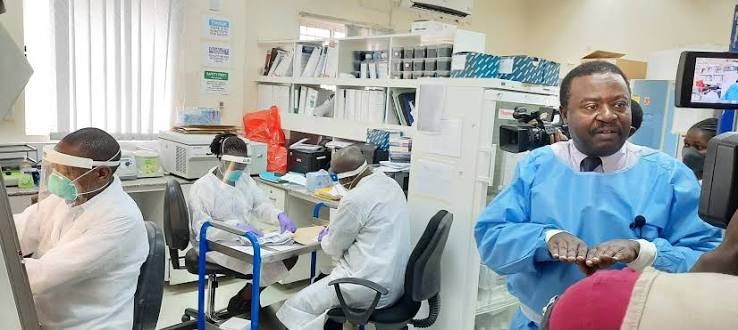
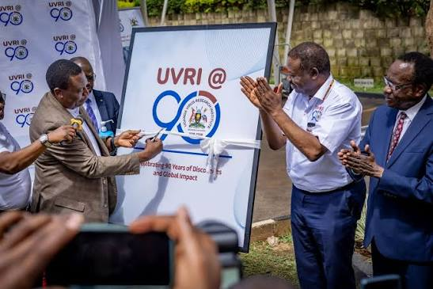

About Us
Institute Record
| Category | Details |
|---|---|
| Founded | 1937 |
| Location | Entebbe, Uganda |
| Oversight | Ministry of Health |
| Designation | WHO Collaborating Centre |

Project Brief
Vision: To be a world-class center of excellence in viral and health research.
Mission: To conduct scientific investigations on viral diseases, contribute to knowledge, innovation, policy, practice, and capacity strengthening.
Goal: To contribute to the reduction of the viral disease burden for improved public health and security.
Core Values: Professionalism, Ethics, Effectiveness, and Teamwork — maintaining high standards of competence, integrity, quality, and collaboration across all research and service delivery.

Core Objectives
Scientific Investigation: Conduct robust research on viral and other communicable diseases.
Knowledge & Innovation: Contribute to scientific knowledge, innovations, and evidence-based health policy and practice.
Capacity Strengthening: Build and maintain a skilled workforce and infrastructure for effective research and service delivery.